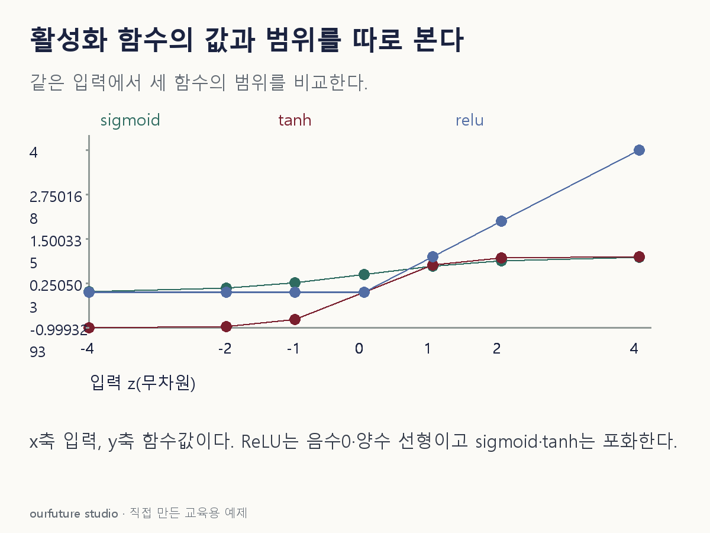

조건을 바꾸며 확인하기
함수값만 계산한다. 원점의 ReLU 미분을 정의하거나 보정 확률을 주장하지 않는다.
설명 그림과 비교하기
아래 그림과 표는 고정된 설명 예제입니다. 기본·변형 중 어떤 조건인지 캡션을 읽고, 바꾼 입력의 결과는 계산 칸에서 확인하세요.

같은 문제를 직접 골라 보기
입력 z=0. 순서는 sigmoid, tanh, ReLU다.
조건을 더 바꾸면?
입력을 z=2로 바꿨다. 세 함수 중 출력이 1을 넘는 함수는?
변형 풀이 확인
ReLU만 해당한다.
ReLU(2)=2다. sigmoid와 tanh는 각각 상한 1 아래에 있다.
시그모이드는 반, 나머지 둘은 원점에서 영.